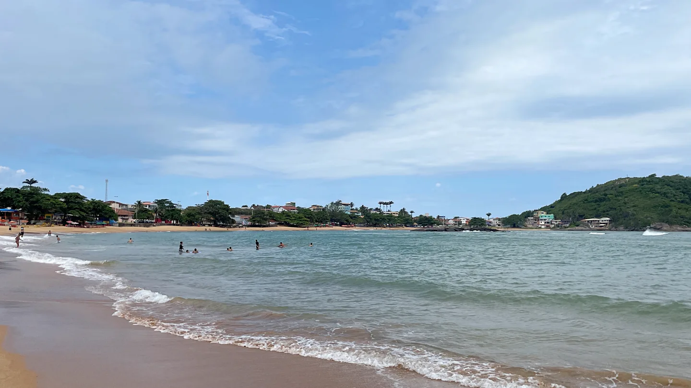
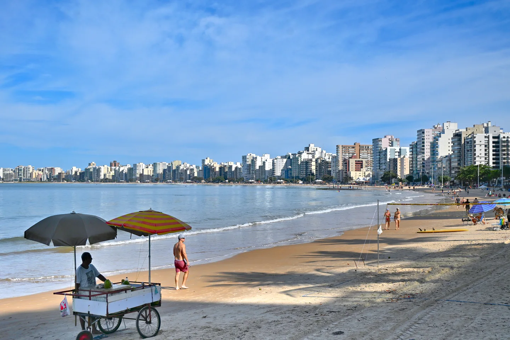
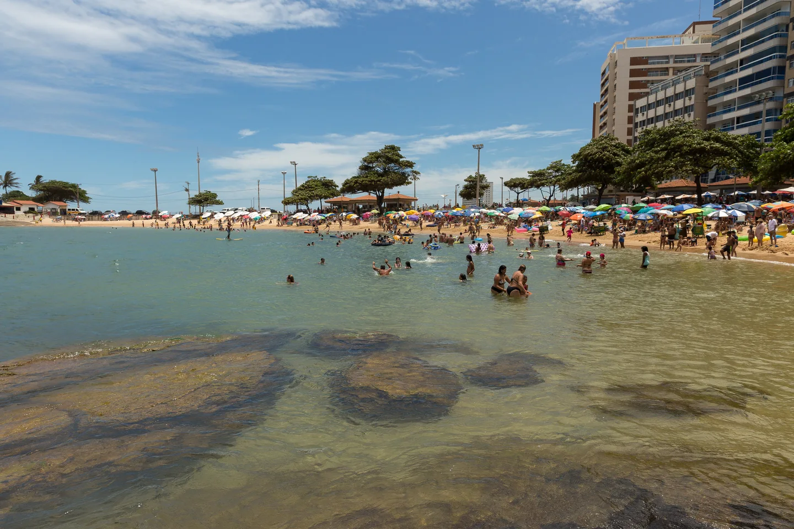

CONHEÇA A REGIÃO · GUARAPARI, ES
Entre o mar
e as montanhas.
O que fazer em Guarapari: praias, natureza, sabores e os caminhos de Buenos Aires e da Rota da Ferradura. Um guia para escolher seus passeios e viver a cidade a dois.
Encontre seu passeio
UM DESTINO, VÁRIOS RITMOS
Guarapari vai além da praia.
Da areia ao interior, a proposta é explorar o município com calma. Escolha uma região por período e deixe espaço para aproveitar o caminho. O Chalezinho Ville fica em Setiba Ville: vocês saem para passear e voltam para um espaço privativo.
01 · DO NORTE AO SUL
Uma praia para cada dia.
As praias estão distribuídas por diferentes partes da cidade. Combine as que ficam na mesma região para aproveitar mais e dirigir menos.

Setiba e Setibão
Uma combinação de enseada e praia aberta. Setiba tem quiosques e castanheiras na orla; Setibão é conhecido pelo surfe. Escolham conforme o programa do dia e as condições do mar.
Praia do Morro
Incluam uma caminhada pela orla no roteiro. A região também permite combinar praia com a visita ao Morro da Pescaria.
Castanheiras, Areia Preta e Namorados
Reservem um período para conhecer as praias centrais e caminhar pelos pontos históricos. A Praia das Virtudes é outra opção para compor esse passeio.
Enseada Azul e Meaípe
Bacutia e Peracanga estão entre as praias da Enseada Azul. Em outro momento do passeio, façam uma parada em Meaípe para conhecer a gastronomia local.

Uma pausa para conhecer a história
No centro, incluam a Casa da Cultura, as ruínas da antiga Igreja Matriz e o Poço dos Jesuítas. O Radium Hotel também faz parte da história do turismo local. Escolham os pontos de interesse e confiram as condições de visitação antes de ir.
Para escolher outros pontos do litoral, consulte o guia oficial de Guarapari ↗.
02 · O INTERIOR TAMBÉM É GUARAPARI
Buenos Aires.
Outro lado da mesma viagem.
As montanhas de Guarapari fazem parte do roteiro. A Rota da Ferradura atravessa a região de Buenos Aires, Boa Esperança e São João do Jaboti, reunindo paisagens rurais, cafés, restaurantes e produção local.
É uma boa escolha para trocar um dia de praia por um almoço demorado e uma tarde no interior. Nossa sugestão é escolher poucas paradas e aproveitar cada uma, em vez de tentar percorrer tudo.
Sabores do interior
Procurem cafés, culinária caseira e produtos locais. Há estabelecimentos ligados a laticínios, geleias e cachaçarias ao longo da rota.
Paisagens e passeios
A Pedra do Elefante integra os atrativos da região. Para conhecer trilhas ou cachoeiras, consultem antes as condições de acesso e os responsáveis pelo passeio.
Como organizar
Reservem um período só para as montanhas. Confirmem a abertura das paradas escolhidas e a rota de acesso antes de sair do chalé.
Conheça a Rota da Ferradura nas informações da Prefeitura ↗.
03 · ENTRE A RESTINGA E O MAR
Natureza para conhecer de perto.
Parque Estadual Paulo César Vinha
O parque reúne trilhas de restinga, praia e a Lagoa de Caraís. A Trilha da Restinga tem cerca de 2,5 km por trecho até a lagoa, em terreno plano e arenoso: reservem tempo para ida, volta e pausas.
Para uma caminhada menor, a Trilha da Clusia tem aproximadamente 150 metros e parte da sede administrativa.
- Visitação geral
- 8h às 17h, com acesso às trilhas até as 15h.
- Entrada
- Gratuita e sem agendamento para visitação geral.
- Antes de sair
- Confiram os avisos do parque, levem água e proteção contra o sol. Animais domésticos não são permitidos.
Horários e regras consultados em 22/10/2026. Consultar o parque no IEMA ↗
04 · A VIAGEM TAMBÉM PASSA PELA MESA
Do almoço de praia
ao café na montanha.
Em Meaípe, aproveitem para experimentar a moqueca capixaba e o bolinho de aipim. Para outro ritmo, procurem a culinária caseira e os produtos locais da Rota da Ferradura.
Um almoço no litoral e um café no interior podem fazer parte de dias diferentes. Confiram cardápio, horário e necessidade de reserva diretamente com o estabelecimento escolhido.
Conhecer a gastronomia local ↗05 · ESCOLHAM O RITMO DE VOCÊS
Sugestões de roteiro a dois.
Ideias para organizar a estadia, sem passeios ou refeições incluídos na hospedagem.
Praia + montanha
- ChegadaCheck-in a partir das 15h e fim de tarde no chalé.
- Dia inteiroBuenos Aires e Rota da Ferradura, com almoço e paradas escolhidas por vocês.
- SaídaCheck-out até as 11h. Depois, se houver tempo, praia de Setiba antes de seguir viagem.
Mais tempo para explorar
- ChegadaInstalem-se e aproveitem o chalé.
- Primeiro diaEscolham entre as praias centrais e a Praia do Morro, ou o litoral sul com Enseada Azul e Meaípe.
- Segundo diaReservem o dia para as montanhas de Guarapari e a Rota da Ferradura.
- SaídaCafé sem pressa e check-out até as 11h.
Trilha + descanso
- De manhãVisita ao Parque Paulo César Vinha, escolhendo uma trilha compatível com o ritmo de vocês.
- À tardeAlmoço e descanso, com tempo para aproveitar a área privativa do chalé.
- À noiteUm jantar escolhido por vocês e tempo juntos.
06 · SEU PONTO DE PARTIDA
Um chalé para voltar
depois do passeio.
O Chalezinho Ville fica em Setiba Ville, Guarapari. São três opções para até duas pessoas, com cozinha e espaços privativos para aproveitar a estadia no seu ritmo.
Spa e piscina
aquecida privativa.
Terreno exclusivo e área de lazer só de vocês.
Conhecer o Signature →Hidromassagem
e deck privativo.
Um espaço para dois, com área externa privativa.
Conhecer o Essenza →Hidromassagem
e pergolado privativo.
Madeira, luz quente e uma atmosfera intimista.
Conhecer o Amore →Já escolheram os dias?
Consultar disponibilidade e preços →Antes de montar seu roteiro
As montanhas ficam em Guarapari?
Sim. Buenos Aires e a Rota da Ferradura ficam no interior do município. O guia combina essas montanhas com o litoral e os demais passeios de Guarapari.
Preciso de carro?
Para combinar litoral, centro e interior com flexibilidade, recomendamos carro ou transporte contratado. Organizem os deslocamentos e o retorno antes de sair, principalmente para os passeios nas montanhas.
O que fazer se chover?
Uma sugestão é priorizar a gastronomia e o tempo no chalé. Reavaliem trilhas, cachoeiras e passeios de barco com os responsáveis conforme o tempo e as condições de acesso.
Quanto tempo reservar para conhecer a cidade?
Com duas noites, sugerimos escolher um passeio principal e aproveitar o chalé. Com três ou mais noites, fica mais fácil combinar praia, montanhas e natureza em dias separados.
Fontes e créditos das imagens
Informações consultadas em 22 de outubro de 2026. Horários, acessos e funcionamento podem mudar; consultem os canais oficiais antes do passeio.
- Portal de Turismo do Espírito Santo — Guarapari
- Prefeitura de Guarapari — Praias
- Prefeitura de Guarapari — Rota da Ferradura
- Prefeitura de Guarapari — Gastronomia
- IEMA — Parque Estadual Paulo César Vinha
Praia de Setiba: HVL, 2025 / Wikimedia Commons, CC BY 4.0. Praia do Morro: Gustavo de Azevedo (Gutoaz), 2026 / Wikimedia Commons, CC BY 4.0. Praia das Castanheiras: Diego Baravelli, 2017 / Wikimedia Commons, CC BY-SA 4.0. As versões adaptadas da foto de Castanheiras permanecem sob CC BY-SA 4.0. Fotografias redimensionadas e convertidas para WebP; recortes de exibição conforme a tela.